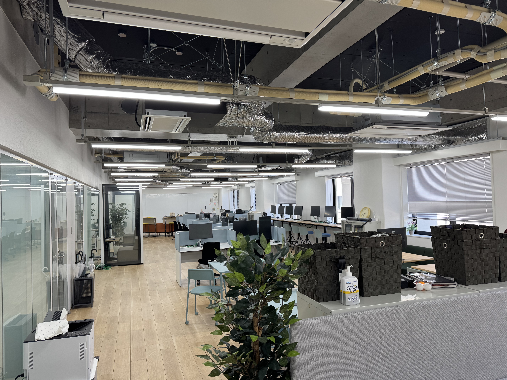

CT・MRIの撮影と再構成
CTの被ばくや造影剤量を減らすときには、画質への影響も調べる必要があります。撮影条件や画像の再構成方法を変え、検査の負担と画質の関係を検討します。CT・MRIや造影剤を扱う研究の指導も行います。
- CT・MRI
- 撮影条件の最適化
- 画像再構成
熊本大学 データサイエンス分野
2027年春 修士課程の進学相談受付中CT・MRIの撮影から、
画像解析、読影レポートまで。
検査の負担を減らしながら、診断に必要な情報を得るにはどうすればよいか。中浦研究室では、撮影条件の工夫や機械学習、生成AIを使って、この課題を研究しています。
CT・MRI
画像の構造や信号を調べる画像の特徴
Research
造影剤を減らしても、必要な画質を保てるか。MRIの特徴から、病気の違いを見分けられるか。撮影条件や解析方法を比較し、画像と数値で確かめます。
CTの被ばくや造影剤量を減らすときには、画質への影響も調べる必要があります。撮影条件や画像の再構成方法を変え、検査の負担と画質の関係を検討します。CT・MRIや造影剤を扱う研究の指導も行います。
画像の形や信号の強さを数値として扱い、病気の鑑別に使えるかを調べます。MRIによる脳腫瘍の鑑別や、深層学習を用いた画像のノイズ低減などが研究対象です。
大規模言語モデルの医学臨床応用を主な対象に、読影レポート生成や画像を扱うモデルの評価を行っています。自然な文章でも医学的に正しいとは限りません。放射線科医による評価と比較し、使える範囲と課題を調べます。
Research history & selected publications
一般病院で10年以上の診療を経験し、大学病院では診療・研究・教育に携わってきました。統計・機械学習・プログラミングを独学で学び、豊富な臨床経験を医療AI・データサイエンスの研究につなげています。
一般病院との共同研究も支援します。診療の中で生まれた疑問や、自施設のCT・MRIデータを研究につなげるために、テーマ設定から解析、論文・学会発表まで相談できます。
共同研究を相談する画像融合から、CT撮影・再構成、機械学習、生成AIまで、各分野の代表論文は以下の項目を開いてご確認ください。
Research metrics
OpenAlexの収録データ （新しいタブ）を毎週集計しています。最終更新：
研究指標を取得できませんでした。上記のOpenAlexのリンクから最新の情報をご確認ください。
心臓CTで捉える形や血管と、心筋SPECTで捉える血流を三次元的に重ねる画像融合として、形態と機能を合わせて評価する方法を世界で初めて報告しました。
American Journal of Roentgenology. 2005;185(6):1554–1557.
出版社のページで確認 （新しいタブ）Circulation. 2005;112(3):e47–e48.
出版社のページで確認 （新しいタブ）低管電圧撮影と画像再構成を組み合わせ、造影剤量や被ばくを抑えながら画質を評価する研究を進めてきました。2011年には、腎機能障害のある患者さんを対象に、造影剤量を40%減らす撮影条件を検討し、世界で初めて報告しました。
Radiology. 2011;261(2):467–476.
出版社のページで確認 （新しいタブ）Radiology. 2012;264(2):445–454.
Google Scholarで探す （新しいタブ）Radiology. 2017;284(1):153–160.
Google Scholarで探す （新しいタブ）Clinical Radiology. 2014;69(1):e11–e16.
出版社のページで確認 （新しいタブ）MRIの特徴量を用いた脳腫瘍の鑑別から始め、深層学習を用いたCT・MRIのノイズ低減や画像再構成へ研究を広げています。実臨床データを用いて、再構成による線量低減と発がんリスク推定の変化も調べました。
European Journal of Radiology. 2018;108:147–154.
Google Scholarで探す （新しいタブ）European Radiology. 2022;32(7):4527–4536.
Google Scholarで探す （新しいタブ）深層学習再構成による線量低減が、発がんリスクの推定にどう影響するかを実臨床データで検討した、世界初の報告です。
European Radiology. 2025;35(6):3499–3507.
出版社のページで確認 （新しいタブ）読影レポートの生成や、構造化したMRIレポートを用いた脳腫瘍の鑑別に取り組んでいます。放射線科専門医試験の問題を使ったLLMの性能比較も行い、臨床で使うために必要な評価方法を検討しています。
Japanese Journal of Radiology. 2024;42(2):190–200.
Google Scholarで探す （新しいタブ）European Radiology. 2026;36(2):1594–1604.
Google Scholarで探す （新しいタブ）放射線科専門医試験の画像を含まない105問を用い、DeepSeek-R1など10種類のLLMと受験者の正答率を比較しました。
European Journal of Radiology. 2026;195:112608.
出版社のページで確認 （新しいタブ）ほかの論文を探す全業績・引用指標（引用数・h-index）は、各プロフィールでご確認ください。
For students

2027年春の修士課程入学に向けた事前相談を受け付けています。
医療のデータを扱う研究に興味がある方は、メールでご相談ください。画像処理、統計、プログラミングなど、今学んでいることや興味のあることを教えてください。
進学先：熊本大学大学院自然科学教育部 半導体・情報数理専攻（博士前期課程：情報数理教育プログラム）
公式の入試情報・募集要項を見る （新しいタブ）
撮影条件やノイズ低減の方法を変えると、画像がどう変わるかを調べる。CT・MRIや造影剤の技術を扱う研究にも取り組めます。
画像処理・画質評価画像の特徴を数値にし、病気の違いを見分ける手がかりになるか確かめる。
統計・機械学習同じ医療情報を複数のモデルに与え、回答の違いや誤りを比較する。
言語モデル・比較実験メールには、現在の所属と相談したいことをご記入ください。
Questions & answers
2027年春の修士課程入学に向けた事前相談を、現在受け付けています。ここでの相談は正式な出願手続きではありません。出願方法・出願期間は、熊本大学大学院自然科学教育部の公式募集要項 （新しいタブ）でご確認ください。
可能です。これまでに学んだことや、興味のあるテーマをお知らせください。研究の進め方は、テーマ設定から解析、発表準備まで、段階に応じて相談しながら進めます。
オンラインミーティングを使った遠隔指導にも対応します。
他大学からの進学も歓迎します。海外からの入学を希望する場合は、事前にご相談ください。
一般病院からの共同研究や、自施設のデータを論文・学会発表につなげるための研究相談にも対応します。一般病院での診療と放射線科部長の経験を踏まえ、診療体制や研究に使える時間・データに合わせて、テーマ設定、解析、発表準備を支援します。CT・MRIや造影剤に関する身近な疑問からご相談ください。研究計画や必要な手続きは、所属機関の規程を確認しながら進めます。
Contact & access
一般病院との共同研究も支援します。
日々の診療での疑問や、自施設の臨床データを使った研究について、中浦 猛までご相談ください。
メール
nakaura.takeshi@kuh.kumamoto-u.ac.jp所在地
黒髪キャンパス
D-Square 5F
熊本大学 黒髪キャンパス
Research and Education Institute for Semiconductors and Informatics, Kumamoto University
Kurokami 2-39-1, Kumamoto, 860-8555, Japan
Tel. +81-96-342-2266